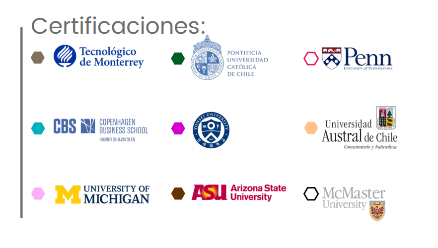

📐 Ingeniería Ejecutiva en Matemáticas
Aplica EQ | Categoría: Ingeniería
📖 ¿De qué trata esta Ingeniería?
Forma profesionales capaces de construir y validar modelos matemáticos que den solución a problemas complejos en ámbitos como ciencia de datos, estadística, tecnología, educación, finanzas y más. Se enfoca en técnicas de análisis, razonamiento lógico y pensamiento científico.
📌 Detalles del Programa
- ⏳ Duración: 4 años (12 cuatrimestres).
- 🛡️ Modalidad: 100% en línea.
- Plataforma: Blackboard con acceso 24/7.
- Clases: 1 a 2 sesiones opcionales semanales (grabadas).
- Soporte: Asistencia Lince y asesoría académica constante.
- Recursos: Biblioteca virtual, Office y software especializado.
🌟 Razones para Estudiar en UVM
- Doble Titulación: Opción de título internacional con National Louis University (Bachelor of Science in Management).
- Certificaciones Coursera: Cursos integrados al plan con validez internacional.
- Formación integral: Desarrollarás pensamiento crítico, investigación aplicada, comunicación efectiva y solución de problemas reales.
- Alta empleabilidad: 79% mejora su situación laboral al egresar (Ipsos/UVM 2020).
💼 Oportunidades Laborales
Como egresado podrás desempeñarte en sectores como:
- 📌 Ciencia de Datos: Análisis de datos, desarrollo de algoritmos y predicción de escenarios.
- 📌 Finanzas y tecnología: Construcción de modelos matemáticos aplicados a inversiones y sistemas automatizados.
- 📌 Investigación y educación: Centros académicos, laboratorios, innovación matemática y enseñanza superior.
- 📌 Sector público o privado: Diseño de modelos estadísticos para toma de decisiones.
- 📌 Consultoría: Aplicación de modelos matemáticos para resolución de problemas complejos en múltiples industrias.
🎓 Certificaciones Internacionales
🎯 Tips para Vender la Ingeniería
- 💡 "Ideal si disfrutas resolver problemas, analizar datos o quieres aplicar las matemáticas al mundo real."
- 🔍 "Con esta ingeniería puedes trabajar en ciencia de datos, finanzas, educación, investigación o consultoría."
- 📌 "Desarrollarás habilidades de pensamiento lógico, modelado y análisis muy valoradas por empleadores."
🛑 Objeciones Comunes y Respuestas
- ❓ "¿Debo ser un genio en matemáticas?"
✅ "No necesitas ser experto. Aprenderás desde los fundamentos hasta niveles avanzados paso a paso." - ❓ "¿Solo podré ser maestro?"
✅ "No. También puedes trabajar en tecnología, finanzas, ciencia de datos y consultoría." - ❓ "¿Tiene buena salida laboral?"
✅ "Sí. Las matemáticas aplicadas son clave en sectores en crecimiento como IA, big data y tecnología financiera."